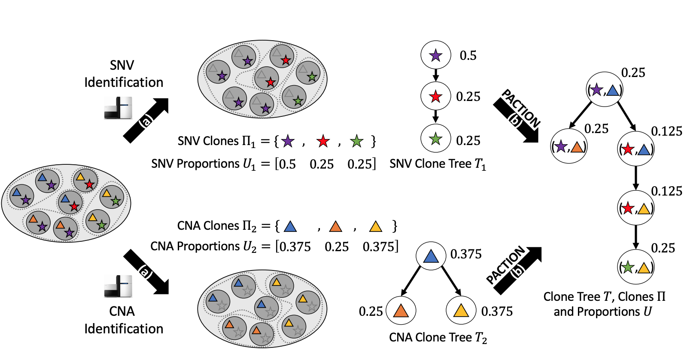
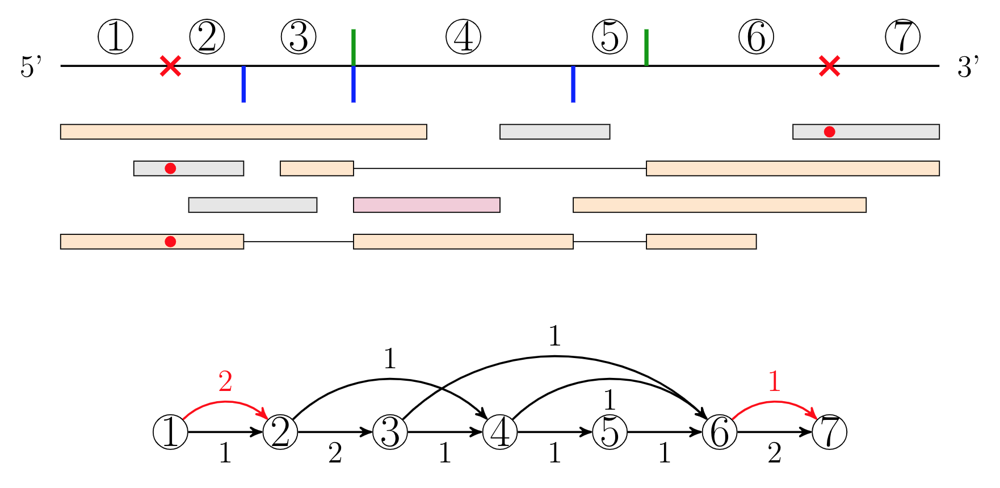
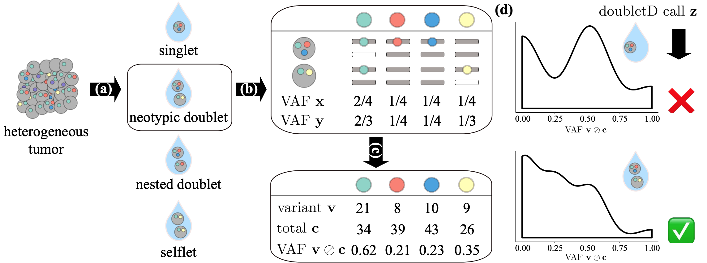
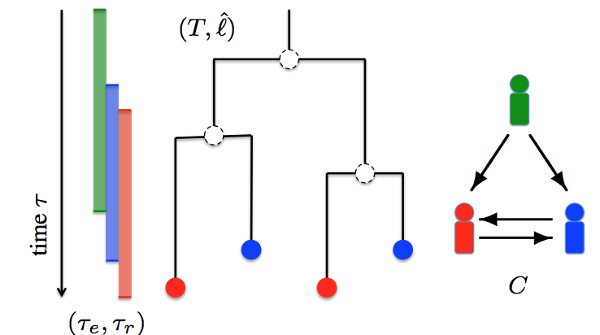
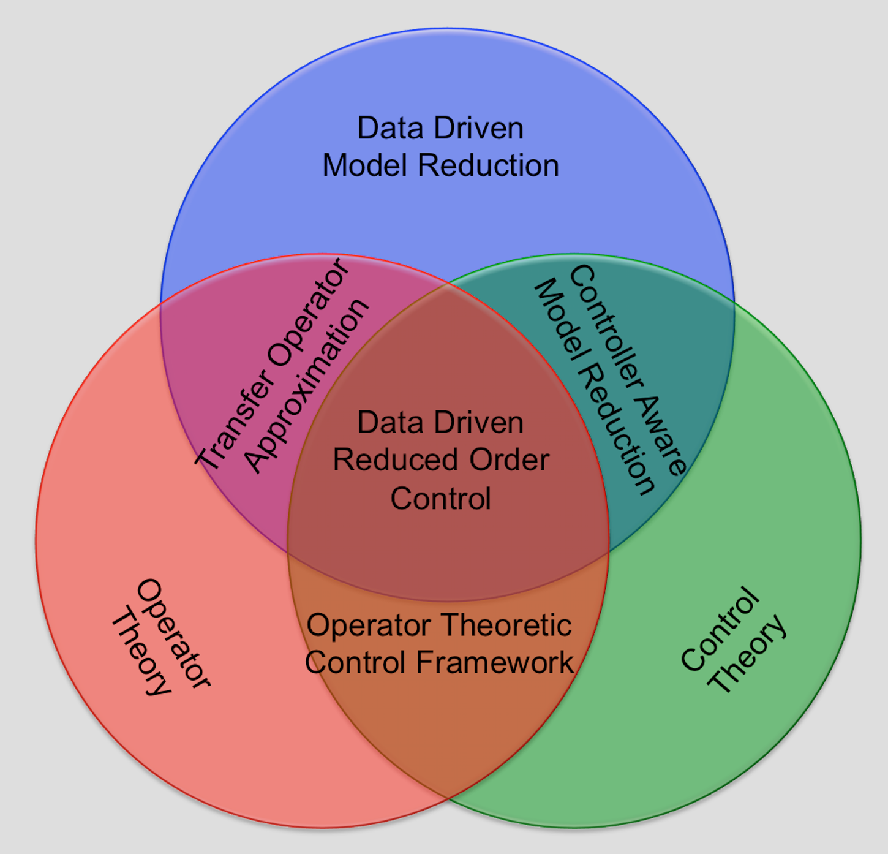
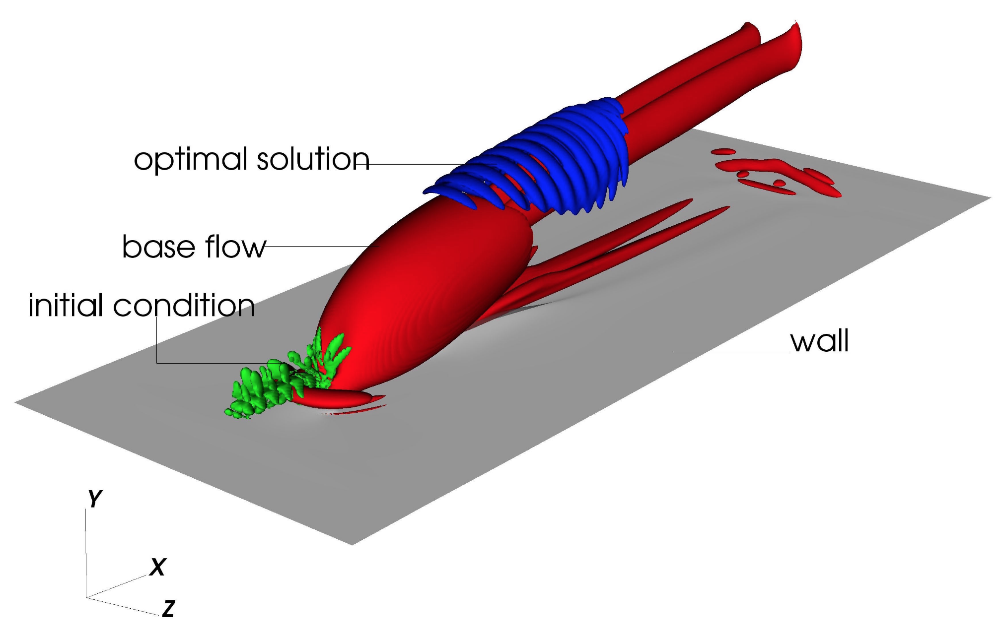
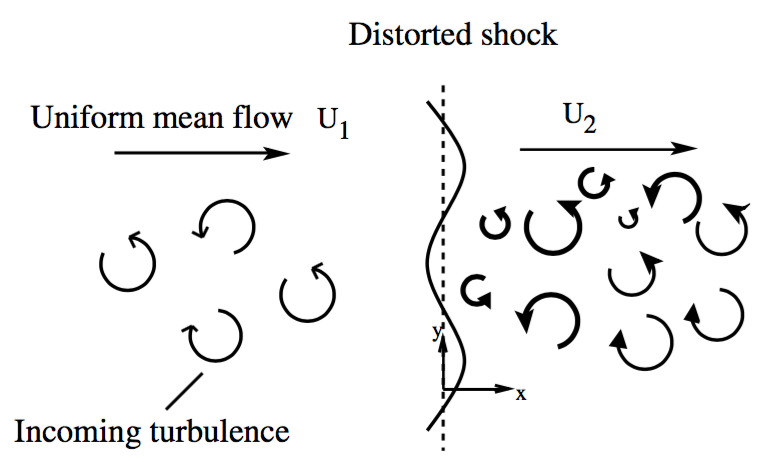

|
Research Projects
Parsimonious Clone Tree Reconciliation
|
 |
Every tumor is composed of heterogeneous clones, each corresponding to a distinct subpopulation of cells that accumulated different types of somatic mutations, ranging from single-nucleotide variants (SNVs) to copy-number aberrations (CNAs).
As the analysis of this intra-tumor heterogeneity has important clinical applications, several computational methods have been introduced to identify clones from DNA sequencing data.
However, due to technological and methodological limitations, current analyses are restricted to identifying tumor clones only based on either SNVs or CNAs, preventing a comprehensive characterization of a tumor's clonal composition.
To overcome these challenges, we formulate the identification of clones in terms of both SNVs and CNAs as a reconciliation problem.
We thus characterize the computational complexity of this problem and we introduce a mixed integer linear programming formulation to solve it exactly, even in the presence of noise or errors in the input SNVs and CNAs.
|
Transcript Assembly for Coronaviruses
|
 |
Genes in SARS-CoV-2 and, more generally, viruses in the order of Nidovirales are expressed by a process of discontinuous transcription mediated by viral RNA-dependent RNA polymerase.
This process is distinct from alternative splicing in eukaryotes, rendering current transcript assembly methods unsuitable to Nidovirales sequencing samples.
We introduce the Discontinuous Transcript Assembly problem of finding transcripts and their abundances given an alignment under a maximum likelihood model that accounts for varying transcript lengths.
Underpinning our approach is the concept of a segment graph, a directed acyclic graph, which, distinct from the splice graph used to characterize alternative splicing, has a unique Hamiltonian path.
We provide a compact characterization of solutions as subsets of non-overlapping edges in this graph, enabling the formulation of an efficient mixed integer linear program.
|
Doublet Detection in Single Cell Sequencing
|
 |
While single-cell DNA sequencing (scDNA-seq) has enabled the study of intra-tumorheterogeneity at an unprecedented resolution, current technologies are error-prone and often result indoublets where two or more cells are mistaken for a single cell.
Not only do doublets confound downstream analyses, but the increase in doublet rate is also a major bottleneck preventing higher throughput with current single-cell technologies.
We present doubletD, the first standalone method for detecting doublets in scDNA-seq data.
Underlying our method is a simple maximum likelihood approach with a closed-form solution.
Detection and removal of doublets using doubletD improves the accuracy and efficiency of downstream analyses such as genotype calling and phylogeny inference.
|
Transmission History Inference for Outbreaks with Weak Transmission Bottleneck
|
 |
The combination of genomic and epidemiological data hold the potential to enable accurate pathogen transmission history inference.
However, the inference of outbreak transmission histories remains challenging due to various factors such as within-host pathogen diversity and multi-strain infections.
We are interested in developing computational methods that can infer transmission history of outbreaks while accounting for multi-strain infections (weak transmission bottleneck).
Current work has focused on enumerating and uniformly sampling feasible transmission histories with weak transmission bottlenecks for a known pathogen phylogeny.
We also have proposed a method for summarizing the candidate transmission histories using a consensus-tree based approach.
|
Data Driven Reduced Order Modeling and Control of Fluid Flows
|
 |
Fluid flows are often governed by complex partial differential equations that result in very high-dimensional systems for numerical simulation
that challenge our largest computers. There is therefore a need to obtain simple reduced order models that approximate the dynamics of the system.
One common approach is to approximate the trajectories of the dynamical system on a lower dimensional subspace.
However, these methods require the knowledge of the equations governing the high-dimensional system which may not be completely known for complex systems.
To overcome this issue, non-intrusive data-driven methods are used to infer reduced order models from data with limited or no knowledge
about the underlying dynamical system. We use these methods to generate reduced order models and controllers for unsteady high-dimensional dynamical systems.
Sashittal, P. & Bodony D., Reduced-Order Control using Low-Rank Dynamic Mode Decomposition, Theoretical and Computational Fluid Dynamics, 2019. [Paper]
Sashittal, P. & Bodony D., Data-Driven Reduced Order Control for Partially Observed Fluid Systems, AIAA Scitech 2020 Forum (p. 1813), 2020. [Paper]
Sashittal, P. & Bodony, D., Low-Rank Dynamic Mode Decomposition using Riemannian Manifold Optimization, 57th IEEE Conference in Decision and Control (CDC), 2018.[Paper]
|
Adjoint based Sensitivity Analysis and Optimization
|
 |
Flow control, optimization and uncertainty quantification requires gradient/sensitivity information of the output with respect to the input parameters of the system.
In most cases the number of output variables of interest are far outnumbered by the number of input parameters.
This makes conventional methods like finite difference to find the sensitivity information computationally infeasible.
Adjoint methods provide computationally efficient of finding the sensitivity of a single output to large number of input parameters simultaneously.
This makes adjoint methods suitable for flow control and optimization application where as an example there is an interest to find the sensitivity of design performance to input design parameters.
We use adjoint methods for stability analysis, uncertainty quantification and flow control of reacting flows.
Sashittal, P., Sayadi, T. & Schmid, P., Frequency response of reacting jets in crossflow, 12th ERCOFTAC SIG 33 Workshop, 2017.[Abstract,Presentation]
Sashittal, P., Sayadi, T. & Schmid, P., Adjoint based sensitivity analysis of a reacting jet in crossflow, APS Division of Fluid Dynamics Meeting Abstracts, 2016.[Abstract,Presentation]
Sashittal, P., Sayadi, T., Schmid, P., Jang, I. & Magri, L. Adjoint-based sensitivity analysis of a reactive jet in crossflow, Proceedings of the Center for Turbulence Research Summer program, 2016. [Paper]
|
Linear Interaction Analysis of Shock-Turbulence Interaction
|
 |
Interaction of isotropic turbulence with a nominally normal shock wave is studied using Linear Interaction Analysis.
The upstream turbulence is decomposed into the three fundamental Kovasznay modes and their interaction with shock
wave is solved in the linear limit. With this tool, the evolution of turbulence statistics like turbulent kinetic
energy and turbulent heat flux across the shock can be analysed. We focused on turbulent heat flux in our study.
Shock dynamics modeled using linear interaction analysis is compared with DNS and a good match is observed at low
upstream fluctuations.
Sashittal, P., Prasaad, Y., Sinha, K. & Larsson, J., Study of unsteady shock motion in shock/turbulence interaction, 7th AIAA Theoretical Fluid Mechanics Conference, 2014.[Paper]
Quadros, R., Sashittal, P., Ramachandran, A. & Sinha, K., Evolution of turbulent heat flux across a shock wave, 5th European Conference for Aeronautics and Space Sciences (EUCASS), 2013. [Paper]
|
|